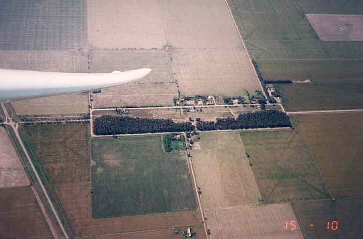

Temas Deportivos
|
Inicio
|
Por temas deportivos se entiende la posibilidad de hacer navegaciones en un planeador, o sea recorrer distancias en el mismo. Como se puede apreciar en la página Vuelo a Vela, es requisito indispensable tomar altura previamente para hacer planeos y recorrer distancias. Una vez lograda la altura de partida (1.000 metros sobre la pista), se puede dar la partida, que debe ser asentada por un observador deportivo como hora y minutos, y comenzar a recorrer el tema que Ud. estableció recorrer previo al despegue. En el caso de un ida y vuelta, deberá fotografiar el vértice o sobrevolarlo si lleva un registrador G.P.S., y retornar a su aeródromo base. Al llegar al mismo el observador asentará la hora de llegada, calculandosé luego el promedio de velocidad para recorrer el tema establecido.  Típica foto de un vértice: Estación de trenes de Los Sembrados - Pcia de Santa Fe Los circuitos a recorrer pueden ser idas y vueltas, triangulares o poligonales, y generalmente se establece una distancia mínima de 100 kilómetros, aunque los días buenos de primavera y verano permiten transitar temas de 300 y 500 kilómetros con relativa comodidad. Debe aclararse que durante el recorrido se debe buscar las corrientes ascendentes que nos permitan tomar altura para poder efectuar los planeos necesarios para completar la distancia. Asimismo estos planeos se hacen preferentemente en las llamadas "calles de ascenso", las que en realidad son zonas de menor descenso. A veces no es posible encontrar las zonas de ascenso, y nos vemos obligados a elegir un buen campo y aterrizar. Afortunadamente la pampa húmeda de Argentina es una gran pista de aterrizaje, y los aterrizajes fuera de campo son uno de los aspectos más divertidos del deporte, donde además se valora la camaradería de los otros volovelistas que integran el equipo de rescate. Toda la instrucción teórica y práctica para poder realizar este tipo de vuelos es aportada por los instructores y por pilotos de experiencia sin costo alguno, siendo habitual que se salga a hacer un tema en "patota". Lo único que Ud. necesita es acreditar la experiencia de vuelo necesaria, y una bocha de remolque para el carro de búsqueda en el caso de un aterrizaje fuera de campo. Por otra parte, nuestro Club está afiliado a la F.A.V.A.V. (Federación Argentina de Vuelo a Vela), filial a la vez de la F.A.I. (Federación Aeronáutica Internacional), quién lleva un Ranquing de los temas deportivos y de los récords logrados en nuestro país. Asimismo la F.A.V.A.V. es la encargada de otorgar las diversas insignias que dá la F.A.I. en la medida que uno va alcanzando diversos logros deportivos ya establecidos a nivel nacional e internacional. |
|
|
|
||